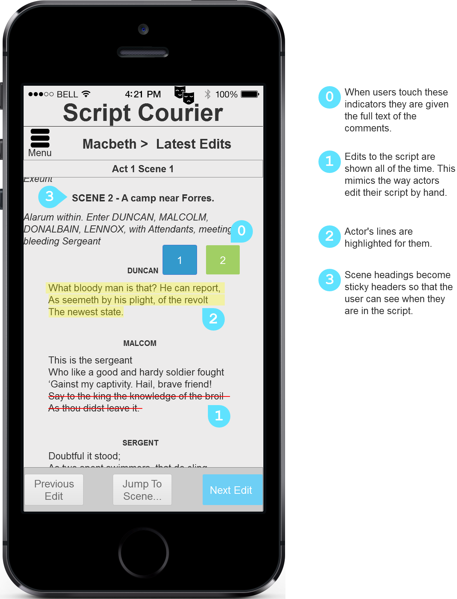

Hi!
Thanks for dropping by. The way I see it, connecting with users—meeting them where they are with a spirit of optimism—is key to making useful software. I speak computer AND human, understanding systems and empathizing with the people who use them.
I love learning. All of it; even the boring stuff. Last summer, I researched section 508 compliance for governmental websites, then presented a webinar about it using kittens and JavaScript frameworks. After years of teaching myself programs such as Gimp and HTML, I am currently earning a master’s degree in Human Computer Interaction at DePaul University. In the near future I would like to learn more about: Node.js, user research methods, intelligent user agents, blacksmithing and developing an app that my father can use without swearing.

Fig. 1 - Script Courier Prototype
I get stuff done. It started early for me. My middle school band leader (*pushes glasses up nose*) used to say “to be on time is to be late,” and I took this to heart. I love me a to-do list and love it more when it is fully crossed off—on time.
I am excited to do quality work with a strong team. Are you as excited as I am?